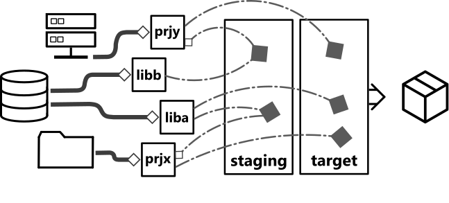

releng-tool¶
releng-tool can be used to assist in the release engineering of a project. This tool allows a user to define one or more packages to process. Each package has the ability to perform several stages: fetching, extraction, patching, configuration, building and installation. What a package defines will vary for a given project. The simplest type of package is script-based that allows a user to define custom scripts on how to perform various stages of the release engineering process. A package is not required to handle every stage. releng-tool also provides helper package types, such as autotools, for projects using common build capabilities.
While this tool can assist in the configuration and building of a project, the framework does not attempt to provide a perfect sandbox for the process. Users defining their projects will have ownership on what compilers/toolchains are used and the interaction between the staging/target area and the host system.